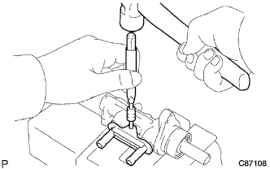
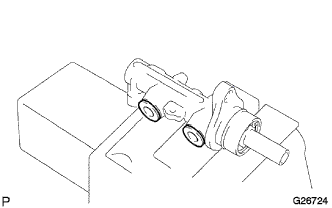
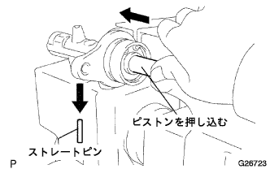

ブレーキマスタシリンダASSY 分解 |
| 1. ブレーキマスタシリンダユニオン取りはずし |
|  |
ピンポンチ(５mm)およびハンマーを使用してリングピンを打ち抜き、ブレーキマスタシリンダユニオンを取りはずす。
| 2. チェックバルブ グロメット取りはずし |
|  |
ブレーキマスタシリンダASSYからチェックバルブグロメット２個を取りはずす。
| 3. ブレーキマスターシリンダーキット取りはずし |
アルミ板を介して、マスターシリンダボデーをバイスに固定する。
マイナス薄刃ドライバーを使用して、Oリングを取りはずす。
|  |
ピストンを押し込み、ブレーキマスタシリンダユニオン取り付け部を下に向けてストレートピンを取りはずす。
ピストンを押し込んだ状態で、SSTを使用して、スナップリングを取りはずす。
No.1ピストンサブASSYをマスターシリンダボデーからまっすぐに引いて取りはずす。
ピストンガイド、シリンダカップおよびプレートNo.1ピストンから取りはずす。
No.2ピストンの端面が出てくるまでフランジ部を木片などに軽く叩き、端面がでたらNo.2ピストンをマスターシンダボデーからまっすぐ引いて取りはずす。